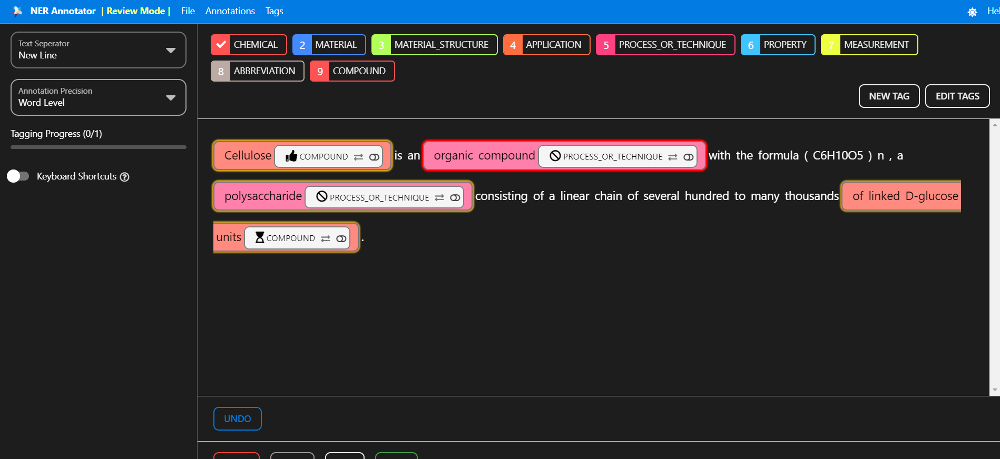
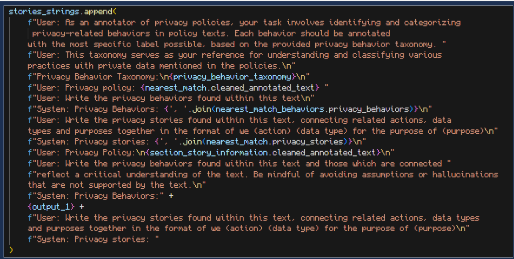
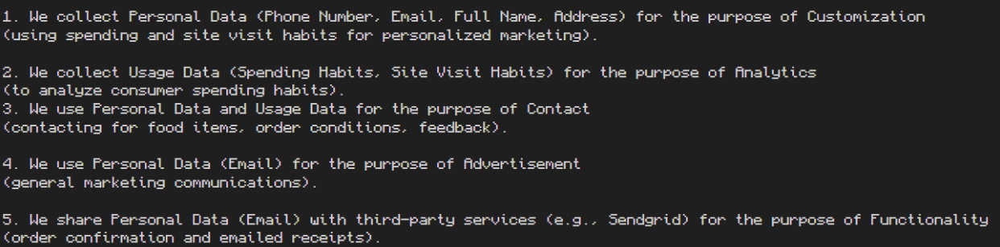

What I've been working on
NER Manager
A contribution to an open source NER text annotator. Allowed for more efficient data annotation and the ability for multiple reviewers to load and improve on previous annotations.

Privacy Stories
My research of using NLP, LLMs and prompt engineering to aid in a privacy focused SDLC.


LLM Training
A mini-repo for efficient training, tuning, usage, data creation and more for LLMs on Hugging Face.
Chess Training
A user experience about the history of programming chess engines. Walkthrough on designing, training and using CNNs as chess engines.